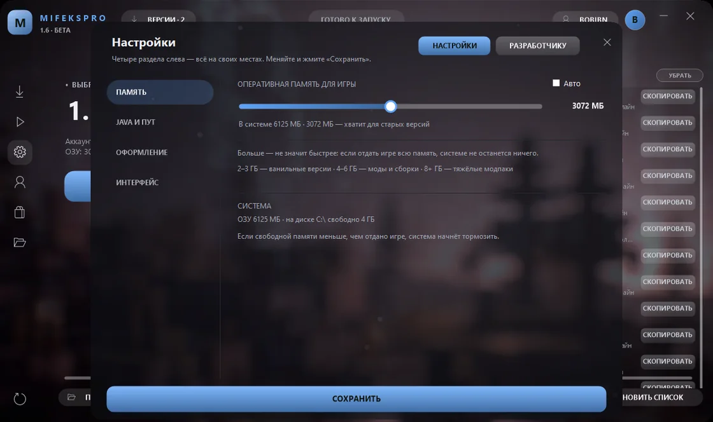
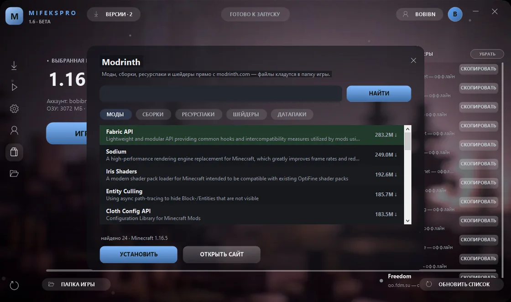
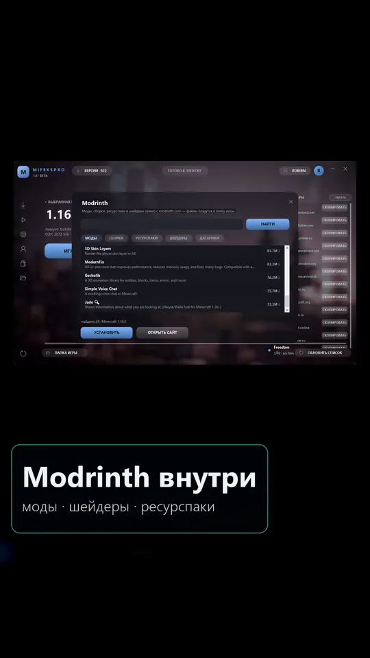

Лаунчер Minecraft без лишних шагов
Forge, Fabric, NeoForge, OptiFine, все релизы и снапшоты, поиск модов на Modrinth и оффлайн-ник — в одном окне. Установка не нужна: скачали файл и играете.

Что внутри лаунчера
MifeksPro 1.6 — авторский лаунчер для Windows. Всё, что нужно для запуска игры, уже в одном окне.
Готовые сборки
Сборки уже внутри лаунчера — выбираете нужную и запускаете.
Все версии
Переключайте версии прямо в окне — одна программа вместо десятка.
Настройки
Память, Java, пути и оформление — в одном месте, без правки конфигов.
Встроенный мод
Мод уже входит в лаунчер — отдельно скачивать и устанавливать не нужно.
Modrinth
Моды, ресурспаки и шейдеры ищутся в окне лаунчера под выбранную версию.
Без лишнего
Никаких навязчивых экранов и вторых программ — только запуск игры.
Как выглядит лаунчер
Главный экран, настройки и поиск модов — всё в одном окне, без вкладок браузера.


Лаунчер за 15 секунд
Запись настоящего экрана: открытие Modrinth со списком модов и разделы настроек. Без ускорений и монтажных склеек интерфейса.

Вертикальная версия
Тот же ролик 1080×1920 для Shorts, VK Клипов и TikTok — 14,8 секунды, около 1 МБ.
Скачать 1080×1920Forge, Fabric, NeoForge, OptiFine — в одном списке
Версия и загрузчик выбираются в два клика. Популярные серверы собраны отдельным списком с готовыми адресами.
Полный список версий открывается в окне лаунчера — там же выбирается сборка и настраивается запуск.
Адрес копируется одной кнопкой — подключение занимает пару секунд.
Как установить за минуту
Установщика нет: лаунчер — один файл. Пять шагов от скачивания до игры.
Кнопка на этой странице или зеркало в блоке загрузки.
Сверьте SHA256 с указанным на странице или откройте файл на VirusTotal.
Если Windows покажет SmartScreen — «Подробнее» → «Выполнить в любом случае». Файл не подписан сертификатом, подробнее в разделе «Честно о файле».
Версия и ОЗУ выставляются в лаунчере, библиотеки скачиваются автоматически.
Оффлайн-ник сохраняется в списке — в следующий раз просто выбираете его.
Версия 1.6
Крупное обновление: светлая тема, очистка списка серверов и переработанные настройки.
Переключатель в настройках: светлый интерфейс, контрастный текст и светлые поля ввода. Тема помечена как экспериментальная — возможны кривые отступы, это ожидаемо.
Кнопка «Убрать» очищает список популярных серверов одним нажатием, если они не нужны.
Выделение памяти и ползунки собраны в одну карточку с разделами — без ввода чисел вручную.
Оптимизация работает на всех версиях: под каждую подбирается своя Java (8, 17 или 21) и флаги G1GC — меньше фризов, стабильнее FPS.
Если закрыть лаунчер во время загрузки, появится предупреждение — скачивание не оборвётся случайно.
Плашка версии переехала к логотипу, кнопки в светлой теме больше не тёмные, исправлена запись файла настроек.
Безопасность и требования
Всё, что можно проверить самостоятельно, — ниже. Хеш файла указан рядом с кнопкой скачивания.
Вход только по оффлайн-нику, пароль никуда не передаётся.
Ники, настройки и миры хранятся локально.
Сборка без сторонних сервисов и «партнёрских» установщиков.
Проект инди, поэтому Windows может показывать предупреждение. Подлинность проверяйте по SHA256.
Файлы из сторонних «сборников лаунчеров» могли быть изменены.
| Параметр | Минимум | Комфортно |
|---|---|---|
| Windows | 10 (64-бит) | 10 или 11, 64-бит |
| Оперативная память | 4 ГБ (игра — 2 ГБ) | 8 ГБ+ (игра — 4 ГБ) |
| Место на диске | ~1 ГБ | 5 ГБ+ с модами и мирами |
| Java | Отдельно ставить не нужно — лаунчер сам готовит окружение | |
| Права администратора | Не требуются | |
ОЗУ под игру выставляется в настройках. Для 1.16.5 достаточно 2–3 ГБ, для новых версий с модами — 4 ГБ и больше.
SHA256: 75a3b8cd5d0768576e721a9432eeb9552252614d50610062e1277acb11af4307
Версии игры
Все релизы и снапшоты из официального списка Mojang — скачиваются по требованию.
Загрузчики
Forge, Fabric, NeoForge, OptiFine — да, все четыре.
Моды и ресурспаки
Поиск и установка через Modrinth прямо в окне лаунчера.
Готовые сборки модпаков
Нет — набор модов собираете сами.
Аккаунт Microsoft / Mojang
Нет — только оффлайн-ник.
Linux и macOS
Нет — только Windows 10/11 (64-бит).
Коротко о главном
Что такое MifeksPro?
Авторский лаунчер Minecraft для Windows: выбор версии и загрузчика, поиск модов на Modrinth, список серверов и настройки в одном окне. Установка не нужна — один файл .exe.
Нужна ли лицензия Minecraft?
Нет. Лаунчер работает на оффлайн-нике и не требует аккаунта Microsoft. Обратная сторона: вход на серверы с проверкой лицензии недоступен.
Это безопасно?
Пароль от аккаунта лаунчер не запрашивает, данные хранятся локально. Файл можно проверить по SHA256 из блока загрузки или открыть на VirusTotal.
Почему антивирус ругается?
Файл не подписан цифровым сертификатом, а SmartScreen не любит новые .exe без подписи — отсюда «Не удалось проверить издателя». Сверьте SHA256 с хешем на странице: если совпадает, файл тот же, что загрузил автор.
Где хранятся миры и настройки?
На вашем компьютере, в папке лаунчера рядом с игровыми файлами. Перед обновлением и экспериментами с модами делайте копию папки мира.
Как удалить лаунчер полностью?
Удалите файл mifekspro.exe и папку лаунчера с версиями, настройками и мирами. Отдельного деинсталлятора нет, в реестр лаунчер ничего не пишет.
Есть версия для Linux, macOS или Android?
Для Linux и macOS нет — только Windows 10/11. Мобильная версия для Android проходит закрытое тестирование: заявка и APK — на странице ЗБТ mobile.
Какая сейчас версия и что в ней нового?
Актуальная версия — 1.6, статус бета. Список изменений — в разделе «Что нового», хеш файла — рядом с кнопкой скачивания.
Скачивание не началось — что делать?
Обновите страницу и нажмите кнопку ещё раз. Если браузер блокирует загрузку .exe, разрешите её вручную. Резервная ссылка — в блоке загрузки.
Скачал архив — играешь сразу
Внутри архива уже лежат Java 25, Minecraft 26.3 и моды. Ставить ничего не нужно: распаковал папку, запустил exe.
mifeks portable
213 МБ · лаунчер + Java 25 + Minecraft 26.3
Все вкладки лаунчера: версии, аккаунт, моды, чат и «Битва построек». Своя Java внутри, системная не нужна.
Скачать ZIPПросто «Битва построек»
56 МБ · только режимы и код
Ничего лишнего: режимы, команда до 20 человек, темы и джойн-код BP-XXXX-XXXX-XXXX. Java 25 внутри архива.
Скачать ZIPСервер битвы
182 МБ · Fabric 26.3 + мод + Java
Комнаты 50×50×65 из бедрока, пять режимов, защита стен. Запуск одним файлом ЗАПУСТИТЬ-СЕРВЕР.bat.
Скачать ZIPВсе компьютеры в одной сети? Адрес для друзей — локальный IP и порт 25565, проброс портов не нужен.
Почему mifeks, а не старые лаунчеры
Честно, без рекламы внутри окна и без установщиков.
| mifeks | TLauncher | Legacy | |
|---|---|---|---|
| Вес лаунчера | 2,5 МБ | 50–100 МБ | 60 МБ+ |
| Реклама в окне | нет | есть | есть |
| Установка | не нужна | нужна | нужна |
| Поиск модов Modrinth | есть | нет | нет |
| Java и игра в архиве | есть | качает отдельно | качает отдельно |
| Своя «Битва построек» | есть | нет | нет |
Считаю скачивания…
Сколько памяти выделить и какую версию взять
Выбери своё железо — подскажу версию, загрузчик и объём памяти для настроек.
Что-то вылетает или есть идея?
Напиши в два клика — без почты и регистраций.
Скачать MifeksPro 1.6 для Windows
Один файл, без установщика и регистрации. Хеш и ссылка для проверки — сразу под кнопкой.
mifekspro.exe · 2 638 848 байт · SHA256: 75a3b8cd5d0768576e721a9432eeb9552252614d50610062e1277acb11af4307
Проверить на VirusTotal · Что нового · Как установить · обновлено 6 ноября 2026